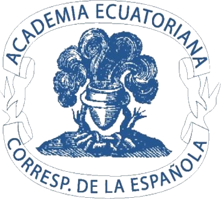
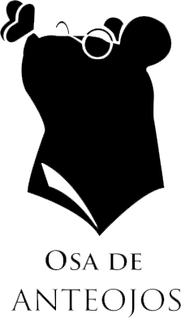

Poeta, traductora, docente y lexicógrafa, nacida en Rusia, de madre nicaragüense y padre ecuatoriano; es residente mexicana. Dirige el proyecto Mujeres al oído, audios de escritoras ecuatorianas contemporáneas. Actualmente trabaja para la Academia Ecuatoriana de la Lengua y trabajó para la Academia Mexicana de la Lengua. Las obsesiones recurrentes en su escritura son el lenguaje, el feminismo, los animales y la memoria. Su poética es sucinta y profunda.
Yo he aprendido mucho, muchísimo impartiendo clase.
Me siento muy orgullosa cuando veo a mis alumnos cumpliendo sus sueños en todo su esplendor y recuerdo que tuve la fortuna de conocerlos y, con suerte, de legarles algo. Los trato siempre con respeto y considero que la enseñanza es sobre todo un acto de amor. Se transfiere la pasión.
Y, siguiendo a Lacán, “El maestro no enseña ex cátedra una ciencia ya construida, da la respuesta cuando los alumnos están a punto de encontrarla”.
Temas de interés profesionales
Lenguaje inclusivo
Traducción
Medios alternativos de difusión de la literatura: espacios sonoros, audiolibros, libros digitales, libros interactivos
Diccionarios
Literatura escrita por mujeres
Feminismo
Escritores ecuatorianos
Escritores mexicanos
Creación literaria: autoría, escritura, enseñanza
Docencia: lingüística y lingüística para psicoanalistas
Ecuatorianismos
Mexicanismos
Gramáticas antiguas
Libros
Lengua española
Colaboraciones
Mujeres al Oído
Directora, Locutora y Curadora
La Parada Producciones
Locutora y Gestora cultural
Academia Ecuatoriana de la Lengua
 Lexicógrafa (2018 a la fecha)
Academia Mexicana de la Lengua
Lexicógrafa (2016-2021)
Osa de Anteojos: Sello editorial de Grado Cero
 Editora
Colegio de Lingüística y Literatura Hispánica (BUAP)
Teorías Lingüísticas (2018) y Lexicografía (2019)
Escuela de la Letra Psicoanalítica
Lingüística para psicoanalistas (2018 CDMX; 2019 Puebla)